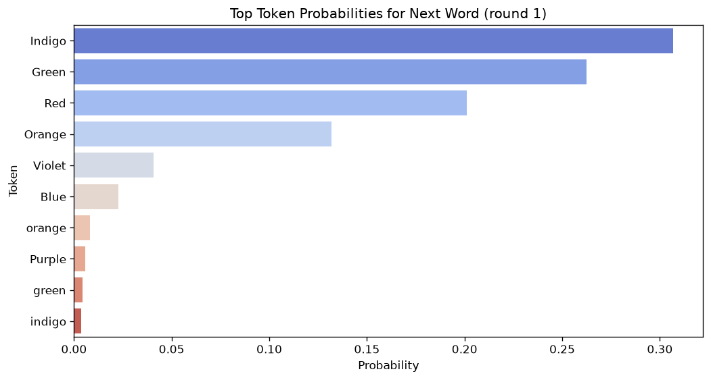
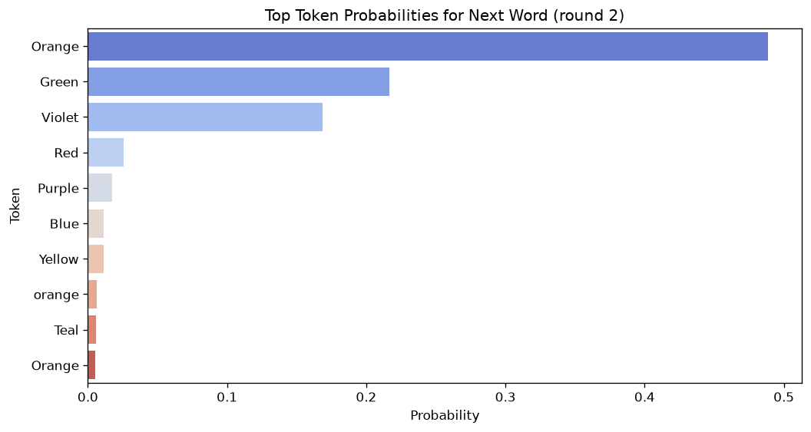
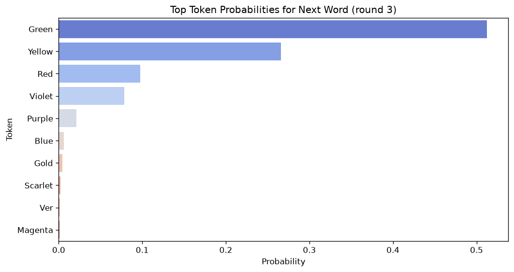

多輪對話就是把 chat_history 整串交給 chat template：本機三輪的 prompt 是 27、59、82 個 token。每一輪先做一次 forward 取最後一個位置的 logits、轉 fp32 做 softmax、列出 top-10，再另外呼叫 generate 生成回答，把回答塞回 chat_history。模型三輪依序回 Indigo、Orange、Green；講過的顏色在後面幾輪的機率大幅下降。
- 本章對應的原始碼：hw3.py:114–118（
Q2_TURNS）、:121–165（q2）。 - 本章的實測數字來自
logs/run_seed0.txt的 Q2 段（hw3.py 的實際輸出）、logs/facts_q1_q2.txt（事實腳本docs/tools/hw03_facts.py的輸出，多了 token id、logit 與 fp16 對照）與logs/review_ch02_q2.txt（--interactive的逐字紀錄）。 - chat template 的全文、特殊 token、雙
<bos>在第 1 章講過，這一章只回指：1.1.2 節、1.1.1 節、1.7 節。
2.1 這一題要觀察什麼
投影片 p.14 的題目是「Observe the response from the following multi-turn conversation. You should check the possibility of the model response and the format of the prompt inputted to the model」：觀察一段多輪對話裡模型的回答，看兩件事，模型對回答的機率，以及每一輪實際送進模型的 prompt 格式。對話是固定的三句使用者輸入：
Q2_TURNS = [
"Name a color in a rainbow, please just answer in a word without any emoji.",
"That's great! Now, could you tell me another color that I can find in a rainbow?",
"Could you continue and name yet another color from the rainbow?",
]p.15 的三小題（配分合計 1 分）：(1) 填出第三輪完整的 chat template 格式 prompt（0.4 分）；(2) 第一輪機率最高的第一個 token 是什麼（0.2 分）；(3) 從一組敘述裡選出錯誤的那一個（0.4 分，選擇題）。第 3 小題的敘述不在投影片與 Colab 裡，這本書不編；前兩題要的東西，本章會列出本機實測的結果與跑出它的方法，但不把它寫成標準答案（理由見目錄頁第 1 節）。
2.1.1 原版 Colab 是互動式的
原版 Colab 第 19 格（前面第 18 格是「## Q2: Multi-turn conversations」的標題格）是一個無窮迴圈，等你自己打字（原版 Colab 第 19 格，節錄迴圈的前半）：
chat_history = []
round = 0
print("Chatbot: Hello! How can I assist you today? (Type 'exit' to quit)")
while True:
user_input = input("You: ")
if user_input.lower() == "exit":
print("Chatbot: Goodbye!")
break
round += 1
chat_history.append({"role": "user", "content": user_input})
chat_template_format_prompt = tokenizer.apply_chat_template(chat_history, tokenize=False, add_generation_prompt=True)
學生要照投影片的三句話一句一句打進去。這就是 第 0 章 0.2 節那段 docstring 留到這一章的那一條差異：「Q2 replays the 3 conversation turns from the HW3 slides (use --interactive to chat)」。hw3.py 預設把三句話寫死在 Q2_TURNS 裡自動跑完，加 --interactive 才回到原版的打字模式（2.7 節）：
def q2(tokenizer, model, args):
if args.interactive:
print("Chatbot: Hello! How can I assist you today? (Type 'exit' to quit)")
turns = iter(lambda: input("You: "), "exit")
else:
turns = Q2_TURNS
chat_history = []
for round_idx, user_input in enumerate(turns, start=1):
if not args.interactive:
print(f"You: {user_input}")
chat_history.append({"role": "user", "content": user_input})
chat_template_format_prompt = tokenizer.apply_chat_template(chat_history, tokenize=False, add_generation_prompt=True)
######################## (Q2.1 ~ 2.3) ########################
print(f"=== Prompt with chat template format inputted to the model on round {round_idx} ===\n{chat_template_format_prompt}")
print("===============================================")
###################################################################兩種模式共用同一個迴圈：turns 在預設模式是一個 list，在互動模式是一個「每次呼叫 input()」的迭代器（2.7 節）。迴圈本體不管輸入從哪來。預設模式下使用者沒有真的打字，所以 :130–131 自己把那句話印成 You: ...，讓輸出看起來和互動模式一樣。這一題沒有 TODO 要填，:134 那行註解標的「(Q2.1 ~ 2.3)」是在提醒「看這裡印出來的 prompt 就能回答前幾小題」。
2.2 chat_history 怎麼累積
關鍵是這一句：模型沒有記憶。Gemma 每一次 forward 都只看這次送進去的 token；上一輪它說過什麼，除非這一輪的 prompt 裡寫著，否則它不知道。所以「多輪對話」在程式裡的樣子是：把到目前為止的所有對話存在一個 list 裡，每一輪都把整個 list 重新排成一個 prompt。
chat_history 就是那個 list。每一輪做兩次 append：
- :132 先 append 使用者這一輪的話
{"role": "user", ...}； - :165（2.6 節）模型回答完，再 append
{"role": "assistant", ...}。
所以 :133 每一輪交給 apply_chat_template 的 list 都是「user、assistant、user、assistant、……、user」，長度 1、3、5，最後一則永遠是 user。這正好滿足 Gemma template 的規則：user 與 assistant 必須交替、從 user 開始（第 1 章 1.1.2 節 «3»）；assistant 會被改名為 model；add_generation_prompt=True 在最後補上 <start_of_turn>model\n，等模型開口。順序如果亂掉（例如連續 append 兩則 user），template 會丟出 Conversation roles must alternate 的例外（第 1 章的常見錯誤格網）。
本機量到三輪 prompt 轉成 token 後的長度（logs/facts_q1_q2.txt，每輪的 prompt tokens）：
| 輪 | chat_history 則數 | prompt token 數 | 比上一輪多 | 開頭 3 個 token |
|---|---|---|---|---|
| 1 | 1 | 27 | ['<bos>', '<bos>', '<start_of_turn>'] | |
| 2 | 3 | 59 | 32 | 同上 |
| 3 | 5 | 82 | 23 | 同上 |
每一輪的開頭都是兩個 <bos>：第 1 章 1.7 節的 R1 在這裡原樣重現，因為 :139 用的是同一種寫法（template 字串已經有一個，tokenizer(...) 又加一個）。印出來的 prompt 一樣只看得到一個。
第 1 輪的 27 個可以拆成：兩個 <bos>、<start_of_turn> user \n 3 個、第一句話 17 個（事實腳本 tok 段的輸出 logs/facts_env_model_tok.txt，第 1 章用過的同一份，把這句話單獨切成 17 個 token）、結尾的 <end_of_turn> \n <start_of_turn> model \n 5 個，合計 2 + 3 + 17 + 5 = 27（和第 1 章拆 32 個的方法相同）。第 2、3 輪多出來的 32 與 23 個 token，是「上一輪模型的回答」加上「這一輪使用者的話與包裝它的特殊 token」；下面這張圖照比例畫出來，其中回答佔 3 個 token 是推算的（見圖說）。
<end_of_turn> + \n，Indigo、Orange 在 top-10 表裡都是單一 token），剩下的歸給新的 user 那一段（29、20 個）。上一輪的 prompt 一個字都不改，原封不動成為下一輪的前綴。圖上最值得注意的是：上一輪的整個 prompt，原封不動地成為下一輪 prompt 的開頭。prompt 只會往後長，不會改寫前面的部分。第 0 章與補充章講的 KV cache 原則上可以利用這一點，把前綴算過的 k、v 留著，下一輪只算新增的 token；但 hw3.py 沒有這樣做，每一輪都從第一個 token 重新算起（2.4 節）。對三句話的對話來說，這點重複不值得處理；對話很長時，「每一輪重算整段」的成本會隨著輪數累積（推論，本機沒有量多輪對話的時間）。
2.3 第三輪的完整 prompt，與 trim 做的事
:135 每一輪都把 prompt 原樣印出來。第三輪的長這樣（logs/run_seed0.txt 第 96–110 行，逐字；行尾的 «N» 是本書加的標記）：
You: Could you continue and name yet another color from the rainbow? === Prompt with chat template format inputted to the model on round 3 === <bos><start_of_turn>user «1» Name a color in a rainbow, please just answer in a word without any emoji.<end_of_turn> <start_of_turn>model Indigo<end_of_turn> «2» <start_of_turn>user That's great! Now, could you tell me another color that I can find in a rainbow?<end_of_turn> <start_of_turn>model Orange<end_of_turn> «3» <start_of_turn>user Could you continue and name yet another color from the rainbow?<end_of_turn> <start_of_turn>model «4» ===============================================
- 1開頭只印出一個
<bos>；模型實際收到兩個（2.2 節的表、第 1 章 1.7 節）。 - 2第 1 輪模型的回答。
chat_history裡存的 role 是assistant，template 把它改寫成model。 - 3第 2 輪模型的回答，同樣的格式。
- 4
add_generation_prompt=True補上的<start_of_turn>model加換行。下一行空白就是那個換行，print再把分隔線印在下一行。
現在看 «2» 的細節。第 1 輪模型實際生成的是 4 個 token：['Indigo', '▁', '\n', '<end_of_turn>']（logs/facts_q1_q2.txt 的 generated ids [173209, 235248, 108, 107]）。▁ 在這裡是一個單獨的空白（id 235248，▁ 這個記號第 3 章詳談）。:163 decode 時 skip_special_tokens=True 拿掉 <end_of_turn>，所以 response 是 'Indigo \n'：顏色、一個空白、一個換行。:165 把這個字串原樣存進 chat_history。
可是第 3 輪的 prompt 裡寫的是 Indigo<end_of_turn>，空白和換行都不見了。去掉它們的是 template 裡的 message['content'] | trim（第 1 章 1.1.2 節 «5»）：trim 把內容頭尾的空白與換行全部去掉，再接上 <end_of_turn>。所以：
| 階段 | Indigo 那一段長什麼樣 |
|---|---|
| 模型生成的 token | Indigo ▁ \n <end_of_turn> |
:163 decode 後、存進 chat_history | 'Indigo \n' |
下一輪經過 template 的 | trim | Indigo<end_of_turn>\n |
換句話說，模型在下一輪看到的「自己上一輪說的話」，和它當時真正生成的不完全一樣：中間少了空白與換行。這是 template 的設計，讓每一則訊息的格式都乾淨一致。它對回答有沒有影響，本機沒有做「不 trim」的對照（推論：只差兩個空白字元，影響應該很小，但沒有量）。
Q2.1 要的就是這一段 prompt。要注意的是，它取決於前兩輪模型實際的回答；換一台機器、換一個版本，前兩輪只要回了別的顏色，第三輪的 prompt 就跟著不同（2.8 節）。
2.4 下一個 token 的機率：一次額外的 forward
印完 prompt，hw3.py 不是直接 generate，而是先自己跑一次 forward，看模型對「下一個 token」的完整機率分布：
inputs = tokenizer(chat_template_format_prompt, return_tensors="pt").to(DEVICE)
with torch.no_grad():
outputs_p = model(**inputs)
last_token_logits = outputs_p.logits[:, -1, :]
probs = torch.nn.functional.softmax(last_token_logits.float(), dim=-1)
top_k = 10
top_probs, top_indices = torch.topk(probs, top_k)
top_probs = top_probs.cpu().squeeze().numpy()
top_indices = top_indices.cpu().squeeze().numpy()
top_tokens = [tokenizer.decode([idx]) for idx in top_indices]
print("Top-10 next tokens:")
for t, p in zip(top_tokens, top_probs):
print(f" {t!r:>16} {p:.4f}")逐行看資料怎麼流：
- :139：這次
tokenizer(...)的結果整個留著（叫inputs），不只取.input_ids。它像一個 dict，裝著input_ids與attention_mask（標出哪些位置是真的 token；這裡只有一句，全部是 1），.to(DEVICE)把裡面每個 tensor 都搬到 GPU。 - :141：
model(**inputs)把 dict 的每個 key 當具名參數傳進去，做一次 forward，不生成任何東西。回傳物件的.logits形狀是 (1, T, 256000)：T 個位置，每個位置對 256000 個 token 各一個分數（第 0 章 0.5 節；這些分數已經過 final soft-cap，落在 (−30, 30)）。 - :143：
[:, -1, :]只取最後一個位置，形狀 (1, 256000)。causal LM 在位置 i 的輸出是「看完前 i 個 token 之後，對第 i+1 個 token 的預測」；最後一個位置是 prompt 結尾的\n（<start_of_turn>model\n的那個換行），它的預測就是「模型回答的第一個 token」。其他位置的預測都是在猜 prompt 裡已經寫好的下一個字，這一題不需要。 - :144：softmax 把 256000 個分數變成加總為 1 的機率。先
.float()轉成 fp32，下一小節說明。 - :147–150：
torch.topk取機率最大的 10 個與它們的 id，tokenizer.decode([idx])把每個 id 個別轉回字串。 - :152–153：
{t!r:>16}用repr印出字串（帶引號，前後的空白看得見），靠右對齊 16 格。
這次 forward 和後面的 generate 是兩次獨立的計算。:141 算出的機率只拿來印表、畫圖；:162 的 generate 會把同一個 prompt 從頭再算一次，才開始生成（2.6 節）。兩者用的 KV cache 也不同：:141 沒有傳 cache，模型 forward 時會自己建一份剛好 prompt 長度的 HybridCache（補充章 K.4 節）；generate 則照補充章 K.8 節的規則準備 cache。補充章 K.8.1 節說過，cache 長度不同時 fp16 的最後幾位可能不同，所以「top-10 表的第 1 名」和「generate 生成的第一個 token」在數學上該一致，實際上要碰到前兩名幾乎同分時才可能不一致（推論）。本機三輪都一致：表的第 1 名是 Indigo、Orange、Green，生成的第一個 token 也是。
2.4.1 為什麼先轉 fp32
原版 Colab 第 19 格直接在 fp16 的 logits 上做 softmax（probs = torch.nn.functional.softmax(last_token_logits, dim=-1)）；hw3.py:144 多了 .float()。fp16 只有約 3 位十進位有效數字，256000 個機率加總、又要印到小數第 4 位，用 fp32 比較保險。實際差多少？事實腳本把兩種都算了一次（logs/facts_q1_q2.txt，第 3 輪的前 5 名，逐字）：
13936 'Green' fp32 0.5125 fp16-softmax 0.5127 logit 24.625
33157 'Yellow' fp32 0.2659 fp16-softmax 0.2659 logit 23.969
5200 'Red' fp32 0.0978 fp16-softmax 0.0978 logit 22.969
107712 'Violet' fp32 0.0786 fp16-softmax 0.0786 logit 22.750
48876 'Purple' fp32 0.0212 fp16-softmax 0.0211 logit 21.438
三輪 30 個數字裡，兩者最多差 0.0002（第 3 輪的 Green），排名完全相同。對這一題來說兩種寫法結論一樣；hw3.py 用 fp32，所以本章所有的機率都是 fp32 softmax 的結果。注意每一行最後的 logit 才是模型輸出的原始分數，前面的 0.5125 這類數字是 softmax 之後的機率，兩者不要混用。
2.5 三輪 top-10 怎麼變
hw3.py 每一輪印出的表（logs/run_seed0.txt 第 55–65、81–91、111–121 行）整理成一張，數字是 fp32 softmax 之後的機率：
| 名次 | 第 1 輪 | 機率 | 第 2 輪 | 機率 | 第 3 輪 | 機率 |
|---|---|---|---|---|---|---|
| 1 | Indigo | 0.3068 | Orange | 0.4887 | Green | 0.5125 |
| 2 | Green | 0.2624 | Green | 0.2168 | Yellow | 0.2659 |
| 3 | Red | 0.2012 | Violet | 0.1689 | Red | 0.0978 |
| 4 | Orange | 0.1320 | Red | 0.0255 | Violet | 0.0786 |
| 5 | Violet | 0.0409 | Purple | 0.0175 | Purple | 0.0212 |
| 6 | Blue | 0.0226 | Blue | 0.0115 | Blue | 0.0063 |
| 7 | orange | 0.0080 | Yellow | 0.0113 | Gold | 0.0044 |
| 8 | Purple | 0.0056 | orange | 0.0063 | Scarlet | 0.0021 |
| 9 | green | 0.0042 | Teal | 0.0059 | Ver | 0.0012 |
| 10 | indigo | 0.0036 | ' Orange' | 0.0056 | Magenta | 0.0008 |
| top-10 合計 | 0.9873 | 0.9580 | 0.9906 |
top-10 合計（logs/facts_q1_q2.txt）接近 1：剩下約 1–4% 的機率分給其他 255,990 個 token。也就是說，模型幾乎確定下一個字是某個顏色名稱，只是在顏色之間猶豫。從表上讀得出來的現象：
- 講過的顏色機率大幅下降。Indigo 第 1 輪是第 1 名（0.3068），第 2、3 輪都掉出前 10；Orange 第 2 輪是第 1 名（0.4887），第 3 輪也掉出前 10（第 1 輪它是第 4 名 0.1320）。
- 沒講過的往上爬。Green 從第 1 輪的第 2 名（0.2624）變成第 3 輪的第 1 名（0.5125）；Yellow 第 1 輪不在前 10，第 2 輪第 7 名（0.0113），第 3 輪第 2 名（0.2659）。
- 第 1 名越來越篤定。第 1 名的機率 0.3068 → 0.4887 → 0.5125。第 1 輪前三名（Indigo、Green、Red）相當接近，第 3 輪 Green 一個就超過一半。
- 大小寫是不同的 token。
orange、green、indigo這些小寫版本各自佔一個位置，機率都很小。 Orange和' Orange'也是兩個不同的 token。第 2 輪第 1 名的'Orange'是 id 36565，第 10 名的' Orange'（前面多一個空白）是 id 20723（logs/facts_q1_q2.txt）。同一個字前面有沒有空白就是不同的 token，第 3 章（Q3）會詳細講。
為什麼講過的顏色會掉下去？最直接的解釋是：模型從對話裡讀到「another color」「yet another color」，又看到自己前面說過 Indigo、Orange，所以避開它們。這是推論。本機只量到「已經講過的顏色機率下降」這個現象，沒有做實驗把原因分開，例如把第 2 輪的使用者句子改成不含「another」、或把回填的 Indigo 換成別的顏色，看機率怎麼變。
還有一點：第 3 輪第 9 名的 Ver 不是一個完整的顏色名稱，看起來像某個較長的字（例如 Vermilion）的開頭，被切成好幾個 token 的第一塊（推論，本機沒有看它後面會接什麼）。這也說明 top-10 列的是 token，不是「字」。
hw3.py 每一輪也把這張表畫成一張橫條圖，存到 HW03/outputs/：
plt.figure(figsize=(10, 5))
sns.barplot(x=top_probs, y=top_tokens, hue=top_tokens, palette="coolwarm", legend=False)
plt.xlabel("Probability")
plt.ylabel("Token")
plt.title(f"Top Token Probabilities for Next Word (round {round_idx})")
save_fig(f"q2_round{round_idx}_top_tokens.png")sns 是 seaborn（建立在 matplotlib 上的統計繪圖套件）。barplot 的 x 給數值、y 給類別，就畫成橫條圖，一個類別一條。hue 指定「依哪個欄位上色」：這裡設成 token 字串本身，每條都是不同的類別，於是 palette="coolwarm" 依類別出現的順序（也就是名次）從藍到紅各給一個顏色；legend=False 不畫圖例，因為 y 軸已經寫了名稱。原版 Colab 第 19 格是 sns.barplot(x=top_probs, y=top_tokens, palette="coolwarm")，沒有 hue。seaborn 0.13 對「給了 palette 卻沒給 hue」會印出警告；hw3.py 加了 hue=top_tokens, legend=False，圖一樣、不再警告。plt.show() 改成 save_fig，見 第 0 章 0.2.3 節。下面三張是本機 hw3.py --seed 0 的實際輸出：

q2_round1_top_tokens.png）。前三名 Indigo、Green、Red 相當接近。
q2_round2_top_tokens.png）。最上面與最下面的兩條都標著「Orange」：最下面那條其實是 ' Orange'，標籤前面的空白在圖上看不出來，要對照文字輸出。Indigo 已經不在圖上。
q2_round3_top_tokens.png）。Green 超過一半；Indigo、Orange 都不在圖上。讀這三張圖時要注意兩件事。第一，x 軸的刻度每張不同：matplotlib 依當輪最大值自動決定範圍，第 1 輪到約 0.3、第 2、3 輪到約 0.5，不能光比條的長度跨輪比較，要看數字。第二，顏色代表名次，不代表顏色名稱：coolwarm 調色盤依照條的順序從藍排到紅，Green 在第 1 輪是第二條、第 3 輪是第一條，顏色就不同。
2.6 生成與回填
outputs = model.generate(**inputs, max_new_tokens=200, pad_token_id=tokenizer.eos_token_id, do_sample=False)
response = tokenizer.decode(outputs[0][inputs.input_ids.shape[1]:], skip_special_tokens=True)
print(f"Chatbot: {response}\n")
chat_history.append({"role": "assistant", "content": response})這四行與原版 Colab 第 19 格的最後幾行幾乎一樣（原版印 f"Chatbot: {response}"，hw3.py 多印一個空行）。逐行看：
- :162：greedy（
do_sample=False），最多 200 個新 token。**inputs把input_ids與attention_mask一起傳進去。pad_token_id=tokenizer.eos_token_id指定補位用 id 1；這裡只有一句、不需要補位，所以實際沒有作用（推論）。沒有傳eos_token_id，所以停止條件照模型的generation_config：遇到 id 1（<eos>）或 107（<end_of_turn>）就停（第 1 章 1.3.2 節）。 - :163：
outputs[0][inputs.input_ids.shape[1]:]用 prompt 的長度把輸出切開，只留新生成的 token 再 decode。這就是第 1 章 1.4 節說的「切 token 而不是切字串」：不管回答裡有沒有model\n或其他字串，都切得準。 - :165：把 decode 後的字串以
assistant的身分存回chat_history，下一輪的 prompt 就會包含它（2.3 節的 trim）。
本機三輪各生成的 token（logs/facts_q1_q2.txt）：
| 輪 | 生成的 id | 對應的 token | response | 印出來 |
|---|---|---|---|---|
| 1 | [173209, 235248, 108, 107] | ['Indigo', '▁', '\n', '<end_of_turn>'] | 'Indigo \n' | Chatbot: Indigo |
| 2 | [36565, 235248, 108, 107] | ['Orange', '▁', '\n', '<end_of_turn>'] | 'Orange \n' | Chatbot: Orange |
| 3 | [13936, 235248, 108, 107] | ['Green', '▁', '\n', '<end_of_turn>'] | 'Green \n' | Chatbot: Green |
三輪都是 4 個 token 就停：顏色名、一個空白、一個換行、<end_of_turn>。題目說「just answer in a word without any emoji」，模型照做了。max_new_tokens=200 遠遠沒碰到。因為 response 尾巴有 ' \n'，再加上 :164 的 \n，log 裡每輪的 Chatbot: 之後會多出兩個空行（logs/run_seed0.txt 第 67–69 行）。
Q2 接在 Q1 後面跑，會不會被 KV cache 影響？
第 1 章的 Q1 碰過這件事：沒有 template 的那條路沿用了前一次留下的 544 格 cache，greedy 的回答就和單獨跑時不同（第 1 章 1.3.1 節、補充章 K.8 節）。Q2 的 generate 也一樣：hw3.py --seed 0 時，三輪分別只需要 27 + 200、59 + 200、82 + 200 格，都比 Q1 留下的 544 格短，所以沿用 544 格；單獨跑 --q 2 時則各自配置剛好的長度。本機比對了 --q 2 單獨跑、--q 1 2、--seed 0 全部題目一起跑三種情況，Q2 段的輸出（三輪 prompt、top-10 表、回答）忽略空白行後逐字相同（logs/review_ch02_q2.txt 最後一行）。每輪只生成 4 個 token，這一次沒有碰到前兩名幾乎同分的步驟。所以本章的數字不管怎麼跑都一樣，這是實測結果，不是保證。
2.7 --interactive：自己打字聊天
:124 的 iter(lambda: input("You: "), "exit") 是 Python 內建 iter 的兩參數形式：iter(函式, 哨兵值) 會做出一個迭代器，每次被要下一個值時就呼叫一次函式，函式回傳的值等於哨兵值時就停止。所以 for 迴圈每轉一圈就 input("You: ") 一次，你打 exit 迴圈就結束，其他任何字串都會變成這一輪的 user_input。
在 repo 根目錄執行：
.venv/bin/python HW03/hw3.py --q 2 --interactive
想不打字、直接重現本機的這次錄製，可以用管線把 Q2_TURNS 的三句話加一行 exit 餵給它（printf '%s\n' A B … 把每個參數印成一行，| 把這些行當成 hw3.py 的鍵盤輸入；最後的 echo "exit=$?" 印出 hw3.py 的結束碼）：
printf '%s\n' "Name a color in a rainbow, please just answer in a word without any emoji." "That's great! Now, could you tell me another color that I can find in a rainbow?" "Could you continue and name yet another color from the rainbow?" exit | .venv/bin/python HW03/hw3.py --q 2 --interactive; echo "exit=$?"
log 第 1 行記的指令把三句話縮寫成 <Q2_TURNS 的三句話，各一行>，上面是展開後的寫法（這一行本書沒有照字面重跑過）。錄下的輸出如下（logs/review_ch02_q2.txt 第 5–30 行與第 79–84 行，中間第 2、3 輪省略；本機路徑已改成相對路徑；«N» 是本書加的標記）：
############################## Q2 ##############################
Chatbot: Hello! How can I assist you today? (Type 'exit' to quit) «1»
You: The 'batch_size' argument of HybridCache is deprecated and will be removed in v4.49. Use the more precisely named 'max_batch_size' argument instead. «2»
The 'batch_size' attribute of HybridCache is deprecated and will be removed in v4.49. Use the more precisely named 'self.max_batch_size' attribute instead.
=== Prompt with chat template format inputted to the model on round 1 ===
<bos><start_of_turn>user
Name a color in a rainbow, please just answer in a word without any emoji.<end_of_turn>
<start_of_turn>model
===============================================
Top-10 next tokens:
'Indigo' 0.3068
'Green' 0.2624
'Red' 0.2012
'Orange' 0.1320
'Violet' 0.0409
'Blue' 0.0226
'orange' 0.0080
'Purple' 0.0056
'green' 0.0042
'indigo' 0.0036
[saved] HW03/outputs/q2_round1_top_tokens.png
Chatbot: Indigo
You: === Prompt with chat template format inputted to the model on round 2 === «3»
…
'Magenta' 0.0008
[saved] HW03/outputs/q2_round3_top_tokens.png
Chatbot: Green
You: exit=0 «4»
- 1互動模式才有的開場白（hw3.py:123）。預設模式不印這行。
- 2管線輸入不會回顯：程式印出
You:等你輸入，但管線送進去的那一行不會顯示在畫面上，所以You:後面直接接著下一個輸出，這裡剛好是 stderr（標準錯誤輸出：程式印警告與錯誤的另一個管道，和一般輸出 stdout 一起顯示在終端機上，本機的錄製兩者都收）的 HybridCache deprecation 訊息（可以忽略，第 0 章 0.1 節）。在終端機裡自己打字時，你打的字會出現在You:後面，按 Enter 才換行。另外，互動模式不會再印一次You: 你的句子（:130–131 只在預設模式印）。 - 3第 2 輪同理：
You:後面接的是第 2 輪的 prompt 標題。第 2、3 輪的 prompt、top-10 表、回答與預設模式逐字相同，三輪依序是 Indigo、Orange、Green。 - 4第 4 次
input()讀到exit，迴圈結束，程式正常退出。後面的exit=0不是 hw3.py 印的：這是本機錄製時，程式結束後另外印出的結束碼；因為管線送進去的exit沒有回顯，它就接在You:後面。0 代表正常結束。
和原版 Colab 第 19 格比，結束的規則不一樣：
| 原版 Colab 第 19 格 | hw3.py --interactive | |
|---|---|---|
| 怎麼判斷結束 | user_input.lower() == "exit" | 回傳值和哨兵值 "exit" 完全相同 |
打 Exit、EXIT | 結束（先轉小寫） | 不結束，會被當成一句話送進模型（由程式碼讀出，本機沒有實測） |
打 exit （後面多一個空白） | 不結束 | 不結束（同上，由程式碼讀出） |
| 結束時 | 印 Chatbot: Goodbye! | 什麼都不印，直接進下一題 |
還有一種結束方式：不打 exit，直接結束輸入（EOF，end of file：輸入來源告訴程式「沒有更多資料了」）。在終端機裡是按 Ctrl-D，用管線時是資料送完。本機只餵第一句話、不給 exit（把上面那條指令的 printf 只留第一句、拿掉 exit），第 1 輪照常跑完（top-10 表、圖、Chatbot: Indigo 都有），第 2 次 input() 讀不到東西就丟出例外（logs/review_ch02_q2.txt 第 114–125 行，逐字；路徑已改成相對路徑）：
You: Traceback (most recent call last):
File "HW03/hw3.py", line 521, in <module>
main()
File "HW03/hw3.py", line 517, in main
QUESTIONS[q](tokenizer, model, args)
File "HW03/hw3.py", line 129, in q2
for round_idx, user_input in enumerate(turns, start=1):
File "HW03/hw3.py", line 124, in <lambda>
turns = iter(lambda: input("You: "), "exit")
^^^^^^^^^^^^^^
EOFError: EOF when reading a line
exit=1
EOFError 一路往上傳出 main，程式以結束碼 1 結束（最後一行同樣是錄製時印的結束碼）。已經跑完的輪次輸出不受影響、圖也已經存檔，但如果你用 --q 2 3 想接著跑 Q3，Q3 就不會跑了。要正常離開，打 exit。
2.8 xxxx：讀 code 不盡信文件
讀 code 不盡信文件：S5 投影片的 Model output 寫的是 xxxx
（S5 是全書大綱的問題對照表裡第 5 條「投影片與程式不一致」的編號。）
投影片寫的：p.14 的「Conversation History」列出三輪，使用者的三句話寫得清清楚楚，模型的三句回答卻都是 Model 1st output : xxxx.、Model 2nd output : xxxx.、Model 3rd output : xxxx.。
實際上：本機模型三輪依序回 Indigo、Orange、Green（2.6 節）。
為什麼投影片不能先寫出來：xxxx 不是投影片偷懶，而是寫不出來。第 2 輪的 prompt 包含第 1 輪的回答，第 3 輪的 prompt 包含前兩輪的回答（2.2 節）。所以第 3 輪 prompt 長什麼樣，取決於模型前兩輪實際說了什麼；而 Q2.1 要你填的正是第 3 輪的完整 prompt。投影片能固定的只有使用者那三句話，模型那幾格只能留給你自己跑出來。
這對你的意義：
- Q2.1 的答案不能從投影片抄，一定要看程式 :135 印出的第 3 輪 prompt。
- 它對執行環境敏感。greedy 在同一台機器、同一套版本、同樣的呼叫順序下可以重現（第 1 章 1.3.1 節）；換了 GPU 或版本，只要某一輪前兩名的分數被 fp16 的誤差翻過去，那一輪就會回別的顏色，第 3 輪的 prompt 跟著不同（推論，本機只有一張 GPU）。本機第 1 輪前兩名 Indigo 與 Green 的 logit 是 24.125 與 23.969（
logs/facts_q1_q2.txt），差 0.156，約 10 格 fp16 精度（fp16 相鄰兩個可表示的數之間的間距，在 16 到 32 之間是 0.0156，見補充章 K.8.1 節；計算值），不算非常接近。 - 回答也決定 top-10 的內容：第 2、3 輪的機率表是在「模型已經回了 Indigo（和 Orange）」的前提下算的。
順帶回指 R1：三輪的 prompt 開頭都是兩個 <bos>，印出來卻只看得到一個（2.2 節），成因與正確寫法都和 Q1 相同，見第 1 章 1.7 節。和 Q1 一樣，hw3.py 為了和助教的參考答案一致而保留。Q2 每輪的 prompt 改成單 <bos> 之後 top-10 會變成多少，本機沒有量。
2.9 動手做：自己跑 Q2
只跑 Q2
在 repo 根目錄執行（需要 GPU 與 HF 授權，見目錄頁 3.2 節）：
.venv/bin/python HW03/hw3.py --q 2
Q2 全程 greedy，不需要 --seed。輸出依序是：Q2 分隔線 → 每一輪 You: ...、那一輪的完整 prompt、分隔線、Top-10 next tokens: 表、[saved] .../HW03/outputs/q2_roundN_top_tokens.png、Chatbot: ...，共三輪。第 1 輪中間會夾一到兩條 HybridCache 的 deprecation 訊息（'batch_size' argument 與 'batch_size' attribute 兩種寫法，stderr，可以忽略；--seed 0 全部一起跑時，其中一條已經在 Q1 印過）。[saved] 那一行印的是你機器上的絕對路徑。和 2.5 節比對：在相同的 GPU 與套件版本下，三輪的表應該逐字相同，回答是 Indigo、Orange、Green，HW03/outputs/ 多出三張圖。數字有些微差異，多半是 GPU 或版本不同；如果某一輪回了別的顏色，後面幾輪的 prompt 與表都會跟著不同（2.8 節）。
想自己聊，加 --interactive（2.7 節），打 exit（全小寫、單獨一行）結束：
.venv/bin/python HW03/hw3.py --q 2 --interactive
想看 token id、logit 與 fp16 softmax 的對照（2.4.1 節那張），用 repo 附的事實腳本（同樣在 repo 根目錄）：
.venv/bin/python docs/tools/hw03_facts.py q2
它同樣要載入模型（需要 GPU 與 HF 授權），結果印在終端機，不會寫進或覆寫 logs/。輸出格式就是 logs/facts_q1_q2.txt 的 q2 段，可以拿 2.4.1 節那五行對照（例如第 3 輪 Green：fp32 0.5125、fp16 0.5127、logit 24.625）：每輪的 prompt token 數與開頭 3 個 token、prompt 的 repr、top-10（id、token、fp32 機率、fp16 機率、logit）、生成的 id 與 token。
2.10 常見錯誤
把 top-10 的數字當成 logit
- 症狀
- 說「Indigo 的分數是 0.3068」，或拿 24.125 當機率。
- 後果
- 兩種量混在一起，跨輪比較、和 Q4 的取樣機率對照時都會錯。
- 正解
- hw3.py 印的是 fp32 softmax 之後的機率（加總為 1）；logit 是 softmax 之前的分數（Indigo 24.125），只在事實腳本的輸出裡有。
以為模型記得上一輪
- 症狀
- 每一輪只把新的那句話送進模型，或忘了把回答 append 回
chat_history。 - 後果
- 模型看不到前面的對話，「another color」可能又回 Indigo；prompt 也和作業要的不同。
- 正解
- 每一輪都把完整的
chat_history（user 與 assistant 交替）交給apply_chat_template；回答以assistant的身分 append 回去。
以為 top-10 表和 generate 是同一次計算
- 症狀
- 認為
generate會「從 top-10 裡挑」，或以為表的數字就是生成時用的機率。 - 後果
- 看不出 Q2 每一輪其實把 prompt 算了兩次；碰到前兩名幾乎同分時，也不會想到兩者可能不一致。
- 正解
- :141 的
model(**inputs)只為了印表畫圖；:162 的generate自己從頭再算一次，cache 長度也不同。本機三輪兩者的第 1 名都一致。
跨輪比較條的長度與顏色
- 症狀
- 看圖說「第 1 輪的 Indigo 和第 3 輪的 Green 差不多長」，或用顏色追同一個顏色名稱。
- 後果
- x 軸範圍每張不同（約 0.3 與 0.5），顏色依名次分配；圖上的比較會誤導。
- 正解
- 跨輪比較看文字輸出的數字；圖只用來看單輪內的分布形狀。
在圖上把 Orange 和 ' Orange' 當成同一個
- 症狀
- 第 2 輪的圖有兩條「Orange」，以為是重複或 bug。
- 後果
- 誤判資料或程式出錯。
- 正解
- 它們是 id 36565 與 20723 兩個 token，後者前面帶空白；文字輸出用
repr印，才看得出' Orange'的空白。
互動模式打 Exit 或直接 Ctrl-D
- 症狀
- 打
Exit結果模型回了一句話；或按 Ctrl-D 看到EOFError。 - 後果
- 多跑一輪；或程式以結束碼 1 結束，
--q後面的題目都沒跑。 - 正解
- hw3.py 只認單獨一行、全小寫的
exit（原版 Colab 不分大小寫）。
本章小結
- 模型沒有記憶。多輪對話是每一輪把完整的
chat_history（user、assistant 交替，最後一則是 user）交給 chat template，上一輪的 prompt 原封不動成為下一輪的前綴；本機三輪是 27、59、82 個 token，每一輪都是雙<bos>（R1）。 - 模型生成的是
Indigo▁\n<end_of_turn>，存進chat_history的是'Indigo \n'，template 的| trim把它變成下一輪 prompt 裡的Indigo<end_of_turn>。 - 每一輪先做一次 forward，取
logits[:, -1, :]，轉 fp32 做 softmax，列出 top-10；和原版的 fp16 softmax 最多差 0.0002，排名不變。這次 forward 和之後的generate是兩次計算。 - 三輪 top-10 的第 1 名依序是 Indigo 0.3068、Orange 0.4887、Green 0.5125；講過的顏色在後面幾輪掉出前 10。「模型避開重複」是推論。
Orange與' Orange'是兩個 token。 - 每輪生成 4 個 token 就停在
<end_of_turn>；:163 用 prompt 長度切 token 取回答。接在 Q1 後面沿用 544 格 cache，實測輸出不受影響。 --interactive用iter(input, "exit")讀輸入：只認全小寫的exit；沒有exit就結束輸入會EOFError、結束碼 1。- S5：投影片的 xxxx 寫不出來，因為後兩輪的 prompt 取決於前面的回答。
下一章是 Q3：不再生成任何東西，只把一句話交給 tokenizer，看它被切成哪些 token、各是什麼 id。本章遇到的 ▁、Orange 與 ' Orange'，會在那裡講清楚。
自我測驗
1. 第 2 輪的 prompt 是 59 個 token，比第 1 輪多 32 個。這 32 個裡有哪些部分？哪些是第 1 輪生成的時候才知道的？
多出來的是：第 1 輪模型的回答（經過 trim 的 Indigo，加上 <end_of_turn> 與換行），以及第 2 輪使用者那一段（<start_of_turn>user\n、那句話、<end_of_turn>\n、補上的 <start_of_turn>model\n）。第 1 輪的 <start_of_turn>model\n 已經在第 1 輪的 27 個裡。只有 Indigo 是生成之後才知道的；本章的圖 2.1 把它算成 3 個 token（推算）。
2. 模型第 1 輪生成的是 'Indigo \n'，為什麼第 2 輪 prompt 裡寫的是 Indigo<end_of_turn>？
chat template 對每則訊息的內容做 | trim，把頭尾的空白與換行去掉，再接上 <end_of_turn>。chat_history 裡存的仍是 'Indigo \n'，只是排成 prompt 時被修整了。
3. hw3.py:143 為什麼取 logits[:, -1, :]，而不是 logits[:, 0, :]？
causal LM 在位置 i 的 logits 是「看完前 i 個 token 之後，對下一個 token 的預測」。最後一個位置是 prompt 結尾 <start_of_turn>model\n 的換行，它的預測才是「模型回答的第一個 token」。位置 0 是第一個 <bos>，它的預測是「序列開頭之後的第一個字」，跟這一輪的問題無關。
4. 第 2 輪的 top-10 同時有 'Orange'（0.4887）與 ' Orange'（0.0056）。如果要算「模型想回 Orange 的總機率」，可以只看第一個嗎？
不行，它們是兩個不同的 token（id 36565 與 20723），機率是分開算的；小寫的 orange（0.0063）也是另一個 token。要算「回 Orange 這個字」的總機率，至少要把這幾個 token 加起來，而且還有 top-10 以外、本機沒有列出的寫法。這也說明 top-10 列的是 token，不是字。
5. 為什麼投影片 p.14 的模型回答只能寫 xxxx？如果你的機器第 1 輪回了 Green，Q2.1 要填的 prompt 會差在哪裡？
後兩輪的 prompt 包含模型前面的回答，回答要跑了才知道。第 1 輪回 Green 的話，第 2、3 輪 prompt 裡 <start_of_turn>model 後面那一行就是 Green<end_of_turn>；而且第 2 輪的機率是在「已經說過 Green」的前提下算的，第 2 輪的回答很可能也不同，第 3 輪的 prompt 會連帶改變。
延伸閱讀
- transformers v4.47.0 文件 Chat templates：多輪對話的
messages格式與add_generation_prompt。 - Python 文件 iter()：兩參數形式
iter(callable, sentinel)的定義。 - PyTorch 文件 torch.nn.functional.softmax 與 torch.topk。
- seaborn 文件 seaborn.barplot：
hue與palette的關係。 - Hugging Face 模型頁 google/gemma-2-2b-it：模型卡裡的對話格式範例。